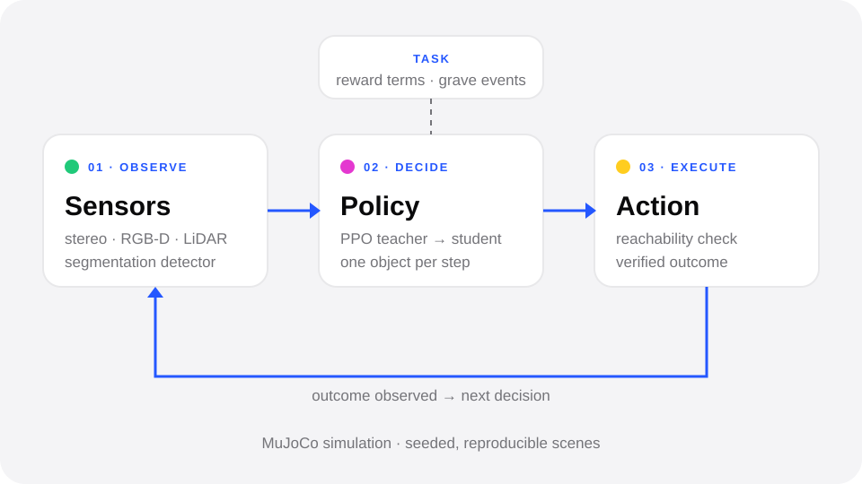

Robot learning
Learning to clear a cluttered pile
A MuJoCo + reinforcement-learning pipeline that decides which object a robot should remove next to reach a buried target, without collapsing the pile around it.
- teacher–student training
- PPO
- parallel MuJoCo workers
- 16
- next: sim-to-real
- UR5

- I design and build the full pipeline: scene generation, simulated sensors, the decision policy, training infrastructure and benchmarks.
- A teacher policy trained on privileged simulator state guides a student that only sees sensor data.
- Ongoing: training and ablation runs, then a simulated UR5 and transfer to the physical robot.
- Python
- MuJoCo
- Gymnasium
- Stable-Baselines3 (PPO)
- YOLO segmentation
- pytest
01
The problem
A target object lies somewhere inside a pile of other objects. To reach it, a robot has to remove objects one at a time — but some of them hold others up. Remove the wrong one and the pile collapses onto, or around, the target.
Geometric contact alone doesn't tell you which object is actually supporting which, and the robot only sees the scene through cameras. The question is a sequence of decisions under uncertainty, which is why the core of the project is a learned policy rather than a fixed rule.
02
What I built
The code is organised as a loop: observe the scene, decide one object to act on, execute, then check what actually happened. Only the simulation layer talks to MuJoCo, and every experiment is defined by a config file rather than by branches in the code.
- Observe — simulated stereo, RGB-D and LiDAR sensors with calibration, and a segmentation detector trained on domain-randomised synthetic images. A privileged ‘oracle’ observer reads the support graph from MuJoCo contact forces for training and evaluation.
- Decide — one object per step. A PPO teacher learns on the true simulator state; a student that receives only the observation imitates it, then keeps improving with PPO. A geometric check rejects objects the gripper cannot reach from any side before anything is executed.
- Task — the reward is split into named terms (progress, disturbance of the target, objects falling near it, refused actions), and episodes end on catastrophic events.
- Execute — runs the chosen action and returns the verified outcome, so the next decision is based on what happened, not on what was planned.
03
Making the simulation trustworthy
Before trusting any learning result I spent a lot of time making sure the simulator measured the right thing. Two examples:
- Scenes were settled for a fixed 0.4 s. With ten objects the release height reached 1.3 m, and a 1.3 m drop takes about 0.5 s — so reference poses were being recorded while objects were still falling, and every ‘disturbance’ was really fall distance. I replaced it with settling until the scene is at rest.
- With the default rolling friction, cylinders landing on an edge rolled away by ~25 cm and the target ended up buried in 0 of 10 test scenes. Raising rolling friction from 0.005 to 0.05 gave buried targets in 6 of 10 — the scenario the project is actually about.
Scenes are seeded and reproducible to the byte, and a regression check over 60 episodes confirms that refactors don't change results.
04
Training infrastructure
- A persistent bank of pre-settled scenes with an 80/20 train/evaluation split, so training doesn't spend its time waiting for piles to settle.
- 16 asynchronous MuJoCo workers with a guard that refuses to start if any worker loaded a different configuration.
- Resumable training: checkpoints restore weights, optimiser, schedules and random generators bit-exactly after an interruption.
- An ablation benchmark that compares the learned decision-makers against rule-based baselines on the same scenes.
05
Results so far
Early, simple baselines already show that the order of removal matters. On 25 episodes with 6 objects, always removing the top object succeeded 24/25 times, a random choice 21/25, and going straight for the target 18/25.
The learned policies come next: the training setup is in place, and I'll publish the ablation results here once the first full round with three seeds is complete.
06
Next steps
- Add a simulated UR5 arm in MuJoCo: grasp selection, inverse kinematics, collision checking.
- Transfer the policy from simulation to the physical UR5 and measure the gap.
- Move from perfect state to stereo perception, with occlusion and uncertainty.
07
Research log
Official training setup ready: scene bank, 16 parallel workers, resumable runs — next is the first round of ablation training.
Ablation benchmark against rule-based deciders; reachability check for the gripper.
Decision module designed: teacher–student PPO, object slots, reward split into terms.
Perception pipeline: simulated stereo / RGB-D / LiDAR, segmentation detector trained on domain-randomised images.
Physics fixes: settle-to-rest and rolling friction; reproducible seeded scenes.
Project start: procedural scene generation and first baselines in MuJoCo.